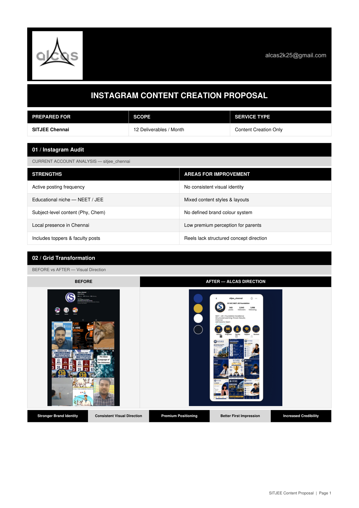
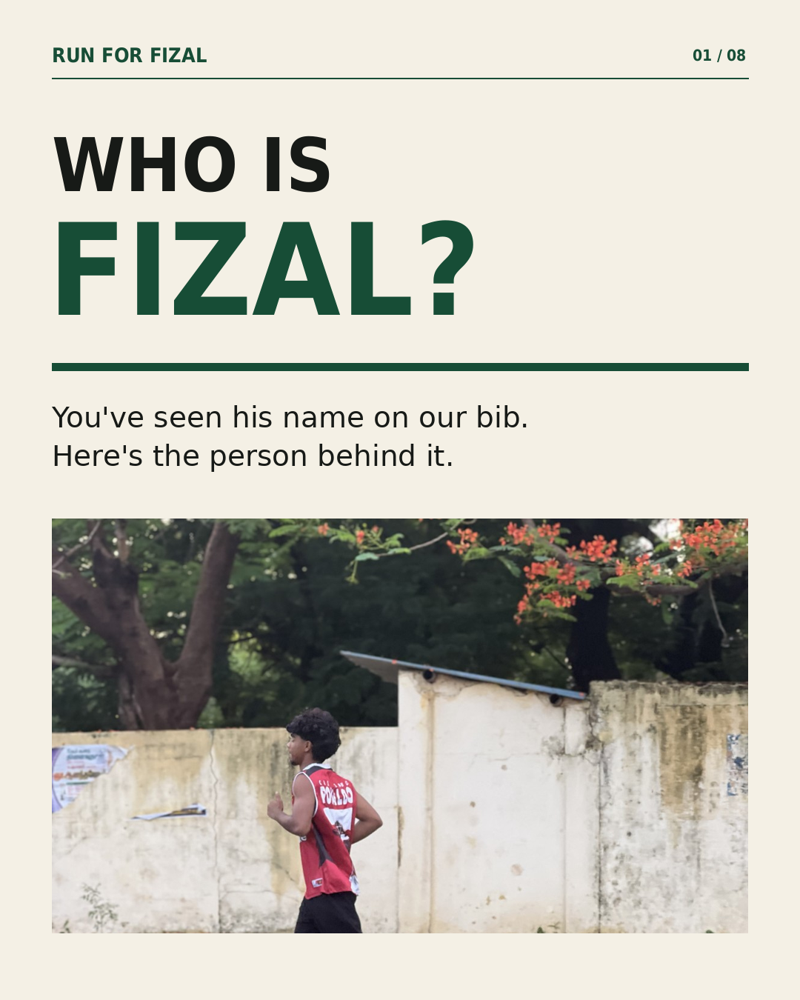
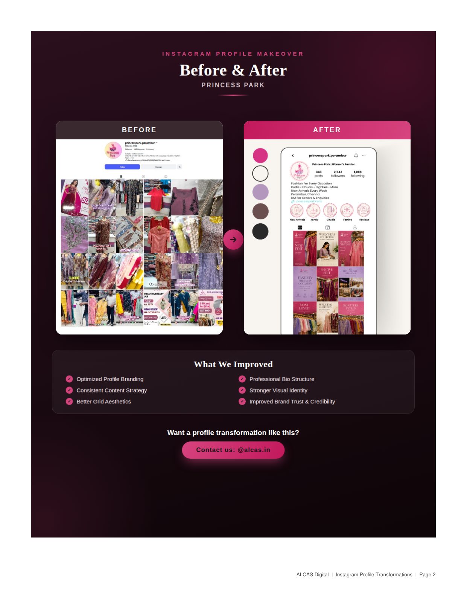
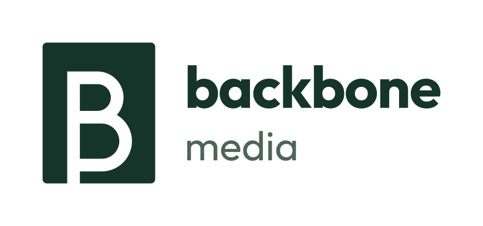
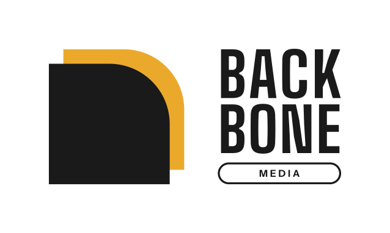
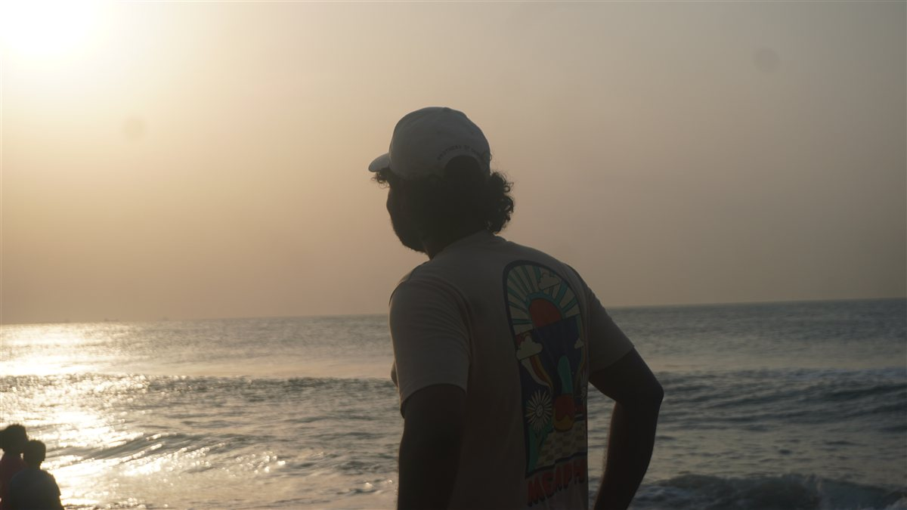
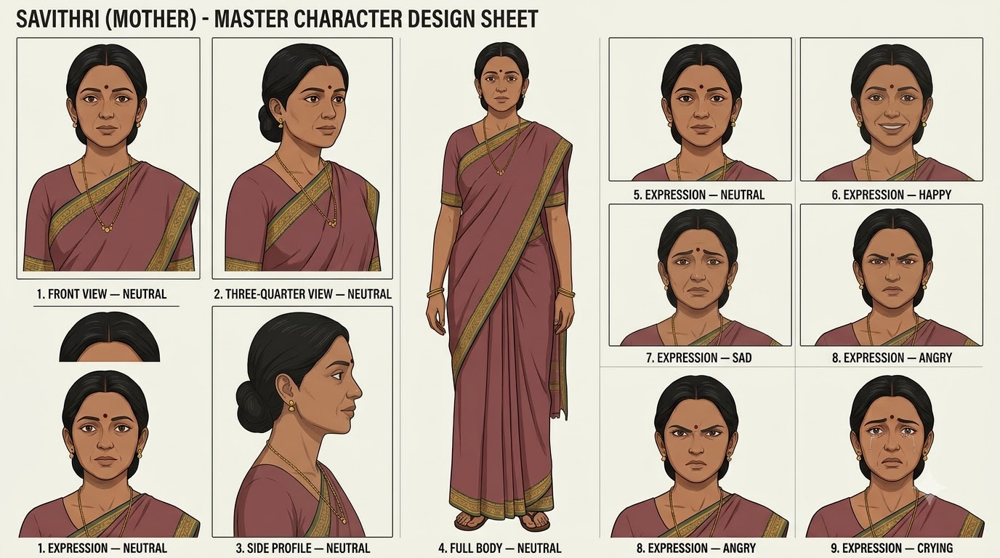

Make every
click mean
something.
I combine marketing, analytics and technology to build smarter digital experiences. Pursuing junior Digital Marketing & Performance Marketing roles with practical foundations in paid search, conversion measurement, SEO audits, and creative strategy.
Search, measurement
& experimentation.
Hands-on campaign planning, conversion tracking architectures, and Meta experiment frameworks. Each case study distinguishes practical simulations from live testing with verifiable deliverable data.
Search intent,
with a strategy.
ReelForge AI · Google Ads Search · Intent-led structure & ad messaging
From click
to conversion.
ReelForge AI · GA4 & GTM · Real website event tracking & QA
From concept
to conversion.
ReelForge AI · Meta Ads · Leads, 9:16 video & Pixel tracking
Visibility,
rethought.
ReelForge AI · Technical SEO · AI Search Visibility
Portfolio note: Practice exercises, campaign blueprints, and product experiments are labelled separately. No simulated metrics or projected numbers are presented as live campaign performance.
Conversations that start
with research.
Outbound B2B prospecting, cold calling, and appointment generation executed during digital marketing agency internship at ALCAS. Structured research via Apify, personalized social audits, multi-touch cadences, and pipeline management in Notion CRM.
Prospect Research & Qualification Matrix
Apify data extraction · ICP filtering · Pre-call audit hygieneEvery cold call began with research. Used Apify to scrape local business directories and Google Search to verify phone lines. Evaluated target brands against structured qualification criteria so outreach was never generic or spammy.
- Active posting cadence
- High transaction value (bridal couture, medical clinics, coaching)
- Inquiry leakage: feed lacks pre-selling or clear WhatsApp link
- Established service provider
- Dormant social presence
- Looking to rebrand or launch new service offering
- Unverified phone numbers
- Low-margin commoditized products
- No commercial offer ready for marketing
The 30-Second Permission-Based Cold Call
The actual script used to book the qualified Google Meet with The Label RitikaBuilt around mutual respect and upfront permission. Rather than pitching immediately, acknowledged their busy day, cited a specific profile observation, and offered a no-cost diagnostic breakdown.
Discovery Questions & Objection Handling
Calm, non-combative reframing for the 4 most common business responsesObjections are requests for clarification. Rather than arguing, validated the prospect's stance and reframed the discussion around inquiry leakage and diagnostic clarity.
Multi-Touch Cadence & Audit-Led Email
4-Touchpoint follow-up sequence across Phone, Email & WhatsAppSingle touchpoints are rarely remembered. Executed a disciplined 9-day follow-up cadence providing continuous value and diagnostic insight before closing the loop politely.
Lead Generation & Outreach note: Activity figures (60+ calls, 70+ emails, 19+ DMs, 1 qualified meeting) reflect documented business development work during ALCAS internship. No revenue numbers, closed retainer values, or projected conversion rates are fabricated or claimed.
Verified credentials.
Practical toolkits.
Credentials held are strictly verified against official issuing bodies (Google, Semrush, Meta, HubSpot). Practical marketing tools and analytics workflows are listed separately based on hands-on project execution.
Google Ads Search Certification (2026)
Google Analytics Certification (2026)
SEO Essentials with Semrush
AI Visibility Essentials with Semrush
Learning A/B Tests, Creative Tests & Lift Studies
Connect with Customers Using Meta Business Suite
Digital Marketing Certification
Marketer in the making.
Let's talk.
Bachelor of Commerce (B.Com General)
University of Madras (Dr. Ambedkar Government Arts College, Chennai). Completed 2024. Grounded in business economics, accounting principles, and commercial analytics.
I am transitioning from a commercial commerce foundation into digital marketing and performance marketing. I combine business reasoning with hands-on technical execution — whether that means building Single-Theme Ad Groups, configuring GTM trigger logic, diagnosing GA4 tracking drops, or editing retention-focused vertical video.
I’m looking for junior performance marketing, digital marketing, or analytics roles where I can contribute to real campaigns, learn from senior practitioners, and turn marketing thinking into measurable outcomes.
Attention, structured.
Built for real audiences.
Applied creative production across social media account audits, Instagram grid redesigns, multi-format content calendars, vector brand identities, camera handling & video shooting, short-form video editing, UGC performance ads, and narrative filmmaking.

Social Media Account Audits
SITJEE Chennai & The Label Ritika · Commercial profile gap analysisDiagnostic pre-pitch audits evaluating profile bios, story highlight funnels, visual cohesion, and inquiry drop-offs. Diagnosed why high-performing academic results and bridal handloom craftsmanship were failing to convert profile visitors into WhatsApp enquiries.

Content Strategy & Editorial Calendars
SITJEE Chennai, Bethel Logistics, Tamara Wellness & Run for FizalStructured 4-pillar content engines balancing reach, authority, proof, and direct conversion. Mapped 12-to-30 day calendars aligning static infographics, carousel series, and reel scripts across educational, logistics, and lifestyle brands.

Instagram Grid Redesigns & Visual Direction
Before & After transformations for 5 commercial brands + 5 structured industrial launch gridsComplete transformation of commercial Instagram feeds from fragmented, unbranded posts into cohesive visual ecosystems. Developed modular 9-post grid architectures, custom highlight cover sets (Reviews, Projects, FAQ, Services), and tailored color systems that build instant trust on first profile visit.

03 Portrait Cut
06 BlockLogo Concepts & Poster Design
Backbone Media (6 vector directions), Krita Renewables & Bethel LogisticsFull identity exploration creating 6 approved brand directions for Backbone Media tied to the positioning slogan "We don't just create content. We create content that turns attention into enquiries." Plus solar energy identity concepts for Krita Renewables and commercial logistics posters for Bethel Express.

FramingCamera Handling & Video Production
Sony Alpha mirrorless operation, shot framing, B-roll capture & pre-shoot planningPractical camera handling focusing on intentional visual capture rather than pointing and hoping. Experience operating a Sony Alpha ILCE-6100 mirrorless camera: configuring high-frame-rate capture (50p/100p) for smooth slow-motion B-roll, framing with the rule of thirds and leading lines, managing outdoor natural lighting, and shooting according to pre-planned shot lists.
Short-Form Video Editing & Rhythm Cuts
Instagram fashion reel edit & kinetic typography sequencePractical short-form vertical video editing built for high viewer retention. Employs 3-second visual hooks, audio-beat rhythm cuts, dynamic typography overlays, and sound design to keep viewers engaged past initial drop-off points.
UGC-Style AI Advertising Videos
Pomelli / ReelForge AI · 9:16 Promotional ad creativeProblem-agitation-solution vertical video creative engineered for Meta Ads testing. Opens with an organic, native retention hook, demonstrates the content intelligence tool in action, and resolves with a direct call to action.

"Aval" (அவள்) — Narrative Short Film Visual Direction
Pre-production concept art, character model sheets & cinematic scene storyboardingVisual development and pre-production storyboarding for a Tamil drama short film. The story follows Muruga traveling from his traditional family home in Chennai to the freezing, snowy streets of Paris in search of Janaki, balancing familial emotional weight against foreign isolation.